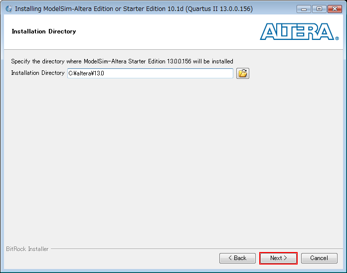

Mentor Graphics ModelSim-Altera Starter Editionのインストール方法
はじめに
ここでは，AlteraのFPGA/CPLD開発向けに提供されているシミュレータの無償版である，Mentor Graphics ModelSim-Altera Starter Editionのインストール方法を説明します． 以降で掲載するスクリーンショットは，下記の環境でインストールした際のものです．
| OS | Microsoft Windows Server 2008 Standard x86 Service Pack 2 |
|---|---|
| Quartus II | 未インストール |
| ModelSim | Mentor Graphics ModelSim-Altera Starter Edition v10.1d |
Quartus II Web Editionのv13.0のインストーラから，Quartus IIと同時にModelSim-Alteraが同時にインストールできるようになりました． したがって，Quartus IIと合わせてModelSim-Alteraを使用する場合は，「Altera Quartus II Web Editionのインストール方法」を参考にセットアップしてください． ここでは，Quartus IIのインストール後にModelSim-Alteraを追加インストールする場合と， ハードウェア記述言語の学習用にModelSim-Alteraのみを個別インストールする場合を想定して説明します．
myAlteraアカウントの作成
AlteraのWebページから開発ソフトウェアなどをダウンロードする際には，メールアドレスなどの個人情報の入力が求められます． Alteraの製品で開発を継続していく予定であれば，アカウントの作成をおすすめします．
ソフトウェアのダウンロード
Alteraのダウンロード・センターにアクセスし，下図のように選択します． 2013年6月現在の最新版はv10.1dでした．通常は最新版をダウンロードし，インストールします． オペレーティング・システムは「Windows」，ダウンロード方法は「ダイレクト・ダウンロード」を選択し，「個別ファイル」タブを選択します．
今回は，インストールに必要なファイルを個別に選択してダウンロードすることにしました． ModelSim-Alteraの本体である「ModelSim-Altera Edition (includes Starter Edition)」の横のダウンロード・ボタンをクリックして，ダウンロードを開始します．

以前と比較して，ダウンロード速度が速くなったように感じます． 700MB以上のインストーラですが，十数分でダウンロードが完了します．
ソフトウェアのインストール
v10.1dからインストーラ（インストール方法）が若干変更されました．以前（v10.0d Service Pack 2）のインストール方法については下記の旧ページをご覧ください．
ダウンロードしたインストーラ「ModelSimSetup-13.0.0.156.exe」を管理者権限で実行します．「Next」をクリックします．
{kind=link}
「ModelSim-Altera Starter Edition」にチェックを入れて，「Next」をクリックします．
{kind=link}
「I accept the agreement」にチェックを入れて，「Next」をクリックします．
{kind=link}
通常はデフォルト設定のままで良いので，「Next」をクリックします．
{kind=link}
インストール概要が表示されるので，確認した後に「Next」をクリックします．

インストールが進行します．
{kind=link}
インストール完了を知らせるウィンドウです． 「Provide your feedback」のチェックを外した後，「Finish」をクリックしてインストーラを終了します．
{kind=link}
以上で，ModelSimのインストールが完了しました．